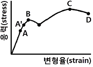
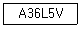
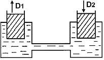
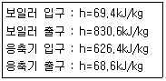
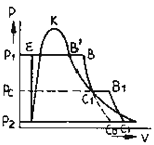
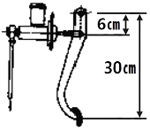

자동차정비기사 (2013-08-18 기출문제)
1과목: 일반기계공학
1. 베어링 하중 1.65kN, 회전수가 300rpm인 단열 레이디얼 볼베어링의 수명은 약 몇 시간인가? (단, 사용베어링의 동정격하중 C=16.9kN이다.)
- 29641 시간
- 59694 시간
- 129640 시간
- 24584 시간
(정답률: 52%)

2. 다음 그림은 연강의 응력-변형률 선도이다. 이 그림에서 C점은 무엇을 나타내는가?

- 비례한도
- 하항복점
- 탄성한계
- 극한강도
(정답률: 59%)
3. 공작기계로 가공된 평면이나 원통면을 정밀하게 다듬질하기 위한 수공구는?
- 스크레이퍼
- 다이스
- 정
- 탭
(정답률: 74%)
4. 코일스프링에서 스프링상수(k)에 대한 설명으로 틀린 것은?
- 스프링상수는 스프링의 변형량에 비례한다.
- 스프링상수는 스프링 소재지름의 4승에 비례한다.
- 스프링상수는 코일의 평균지름의 3승에 반비례한다.
- 스프링상수는 스프링 소재의 전단탄성계수에 비례한다.
(정답률: 62%)
5. 연삭숫돌 사양의 기호가 다음과 같이 나타났을 때 V가 나타내는 의미는?

- 연삭재의 종류
- 결합제의 종류
- 입도의 종류
- 조직의 종류
(정답률: 55%)
6. 용접을 융접, 압접, 납땜으로 대분류할 때 다음 중 압접이 아닌 것은?
- 단접
- 점용접
- 심용접
- 테르밋용접
(정답률: 60%)
7. 강의 표면처리에서 표면에 알루미늄을 침투시켜 내스케일성과 고온산화 방지 등을 목적으로 사용하는 표면처리방법은?
- 크로마이징
- 실리코나이징
- 보로나이징
- 칼로나이징
(정답률: 65%)
8. 그림에서 각각 피스톤의 지름이 D1=40㎜, D2=50㎜이다. 피스톤이 화살표 방향으로 10㎜ 움직이려면 D1 피스톤은 화살표 방향으로 몇 ㎜ 움직여야 하는가?(오류 신고가 접수된 문제입니다. 반드시 정답과 해설을 확인하시기 바랍니다.)

- 12.500㎜
- 15.625㎜
- 25.000㎜
- 31.250㎜
(정답률: 59%)
9. 길이 4m인 단순보의 중앙에 1000N의 집중하중이 작용할 때 최대 굽힘모멘트는 약 몇 N·m인가?
- 250
- 500
- 750
- 1000
(정답률: 44%)
10. 원형 단면봉에 비틀림 모멘트(T)가 작용할 때 생기는 비틀림각 ø의 설명으로 옳은 것은?
- 비틀림 모멘트에 반비례한다.
- 축 길이에 반비례한다.
- 축지름의 4제곱에 반비례한다.
- 전단탄성계수에 비례한다.
(정답률: 43%)
11. 나사를 결합용 나사와 운동용 나사로 구분할 때 다음 중 운동용 나사로 볼 수 없는 것은?
- 사다리꼴나사
- 사각나사
- 삼각나사
- 톱니나사
(정답률: 69%)
12. 웜기어의 일반적 특징을 설명한 것으로 틀린 것은?
- 운전이 정숙하고 원활하다.
- 역회전을 방지할 수 있다.
- 큰 감속비가 얻어진다.
- 미끄럼이 작기 때문에 전동효율이 크다.
(정답률: 55%)
13. 일반 주철에 관한 설명으로 틀린 것은?
- Fe-C 합금에서 C의 함량이 2.11∼6.67%인 것을 말한다.
- 철강과 비교하여 단련이 우수하다.
- 철강에 비하여 인성이 낮고 메짐성이 크다.
- 철강보다 용융점이 낮아 주조성이 우수하다.
(정답률: 75%)
14. 다음 중 숏 피닝(Shot peening)작업에 관한 설명으로 틀린 것은?
- 냉간 가공법의 일종이다.
- 피로강도가 향상된다.
- 모래를 분사하여 표면가공을 한다.
- 와셔, 핀, 스프링 부품들에 대해 기계적 성질을 개선하는데 주로 이용된다.
(정답률: 72%)
15. 왁스, 파라핀 등으로 만든 주형재를 사용하여 대단히 치수가 정밀하고 면이 깨끗한 복잡한 주물을 얻을 수 있는 주조법은?
- 다이캐스팅
- 셀몰드법
- 인베스트먼트법
- 이산화탄소법
(정답률: 67%)
16. 단면적이 600mm2인 봉에 600N의 추를 달았더니 허용인장응력에 도달하였다. 이 봉의 인장강도가 500N/cm2이라고 하면 인장강도에 대한 안전계수는 얼마인가?
- 5
- 6
- 50
- 60
(정답률: 52%)
17. 산화알루미늄(Al2O3) 분말을 마그네슘, 규소 등의 산화물과 소량의 다른 원소를 첨가하여 소결한 절삭공구로 충격에는 약하나 고속절삭에서 우수한 성능을 나타내는 것은?
- 고속도강
- 초경합금
- 세라믹
- 다이아몬드
(정답률: 64%)
18. 축의 토크를 전달시키면서 보스를 축방향으로 이동시킬 필요가 있을 때 사용하는 키는?
- 페더키
- 반달키
- 평키
- 묻힘키
(정답률: 59%)
19. 2개 이상의 유압기기회로에서 각 회로의 액추에이터 동작을 차례로 제어하려면 어떤 밸브로 제어를 해야 가장 적합한가?
- 체크 밸브
- 무부하 밸브
- 시퀀스 밸브
- 카운터 밸런스 밸브
(정답률: 66%)
20. 일반적인 유압펌프의 종류가 아닌 것은?
- 카플란 펌프
- 벌류트 펌프
- 기어펌프
- 베인펌프
(정답률: 53%)
2과목: 기계열역학
21. 체적이 0.5m3인 밀폐 압력용기 속에 이상기체가 들어있다. 분자량이 24이고, 질량이 10kg이라면 기체상수는 몇 kN·m/kg·K인가? (단, 일반기체상수는 8.313kJ/kmol·K이다.)
- 0.3635
- 0.3464
- 0.3767
- 0.3237
(정답률: 68%)
22. 14.33W의 전등을 매일을 7시간 사용하는 집이 있다. 1개월(30일) 동안 몇 kJ의 에너지를 사용하는가?
- 10830kJ
- 15020kJ
- 17.420kJ
- 10.840kJ
(정답률: 63%)
23. 다음 중 정압연소 가스터빈의 표준 사이클이라 할 수 있는 것은?
- 랭킨 사이클
- 오토 사이클
- 디젤 사이클
- 브레이턴 사이클
(정답률: 49%)
24. 이상기체의 폴리트로픽 과정을 일반적으로 Pvⁿ=C로 표현할 때 n에 따른 과정을 설명한 것으로 맞는 것은? (단, C는 상수이다)
- n=0 이면 등온과정
- n=1 이면 정압과정
- n=1.5 이면 등온과정
- n=k (비열비)이면 가역단열과정
(정답률: 69%)
25. 압력 250kPa, 체적이 0.35m3의 공기가 일정 압력 하에서 팽창하여 체적이 0.5m3으로 되었다. 이때의 내부에너지의 증가가 93.9kJ 이었다면 팽창에 필요한 열량은 몇 kJ인가?
- 43.8
- 56.4
- 131.4
- 175.2
(정답률: 63%)
26. 랭킨사이클의 각 점에서 작동유체의 엔탈피가 다음과 같으면 열효율은 약 얼마인가?

- 26.7%
- 28.9%
- 30.2%
- 32.4%
(정답률: 69%)
27. 단열과정으로 25℃의 물과 50℃의 물이 혼합되어 열평형을 이루었다면, 다음 사항 중 올바른 것은?
- 열평형에 도달되었으므로 엔트로피의 변화가 없다.
- 전계의 엔트로피는 증가한다.
- 전계의 엔트로피는 감소한다.
- 온도가 높은 쪽의 엔트로피가 증가한다.
(정답률: 66%)
28. 단열 밀폐된 실내에서 [A]의 경우는 냉장고 문을 [B]의 경우는 냉장고 문을 연채 냉장고를 작동시켰을 때 실내온도의 변화는?

- [A)는 실내온도상승, [B]는 실내온도 변화 없음
- [A)는 실내온도 변화 없음, [B]는 실내온도 하강
- [A],[B] 모두 실내온도가 상승
- [A]는 실내온도 상승, [B]는 실내온도 하강
(정답률: 49%)
29. 다음은 증기 사이클의 P-V선도이다. 이는 어떤 종류의 사이클인가?
- 재생 사이클
- 재생재열 사이클
- 재열 사이클
- 급수가열 사이클
(정답률: 62%)
30. 체적 2500L인 탱크에 압력 294kPa, 온도 10℃인 공기가 들어가 있다. 이 공기를 80℃까지 가열하는데 필요한 열량은? (단, 공기의 기체상수 R는 0.287kJ/kg·K, 정적비열 Cv=0.717kJ/kg·K이다.)
- 약 408kJ
- 약 432kJ
- 약 454kJ
- 약 469kJ
(정답률: 28%)
31. 준평형 정적과정을 거치는 시스템에 대한 열전달량은? (단, 운동에너지와 위치에너지변화는 무시한다.)
- 0이다.
- 내부에너지의 변화량과 같다.
- 이루어진 일의 양과 같다.
- 엔탈피의 변화량과 같다.
(정답률: 46%)
32. 온도 90℃의 물이 일정 압력 하에서 냉각되어 30℃가 되고, 이 때 25℃주위로 500kJ의 열이 전달된다. 주위의 엔트로피 증가량은 얼마인가?
- 1.50kJ/K
- 1.68kJ/K
- 8.33kJ/K
- 20.0kJ/K
(정답률: 30%)
33. 온도 600℃의 고온 열원에서 열을 받고 온도 150℃의 저온 열원에 방열하면서 5.5kW의 출력을 내는 카르노기관이 있다면 이 기관의 공급열량은?
- 20.2kW
- 14.3kW
- 12.5kW
- 10.7kW
(정답률: 34%)
34. 냉동기에서 0℃의 물로 0℃의 얼음 2ton을 만드는데 50kWh의 일이 소요된다면 이 냉동기의 성능계수는? (단, 얼음의 융해잠열은 334.94kJ/kg이다.)
- 1.⑤
- 2.32
- 2.67
- 3.72
(정답률: 18%)
35. 가스터빈 엔진의 열효율에 대한 설명 중 잘못된 것은?
- 압축기 전후의 압력비가 증가할수록 열효율이 증가한다.
- 터빈입구의 온도가 높을수록 열효율이 증가하나 고온에 견딜 수 있는 터빈 블레이드개발이 요구된다.
- 역일비는 터빈 일에 대한 압축 일의 비로 정의되며 이것이 높을수록 열효율이 높아진다.
- 가스터빈 엔진은 증기터빈 원동소와 결합된 복합시스템을 구성하여 열효율을 높일 수 있다.
(정답률: 62%)
36. 온도가 350K인 공기의 압력이 0.3MPa, 체적이 0.3m3, 엔탈피가 100kJ이다. 이 공기의 내부에너지는 얼마인가?
- 1kJ
- 10kJ
- 15kJ
- 100kJ
(정답률: 42%)
37. 견고한 단열 용기 안에 온도와 압력이 같은 이상기체 산소 1kmol과 이상기체 질소 2kmol이 얇은 막으로 나뉘어져 있다. 막이 터져 두 기체가 혼합될 경우 이 시스템의 엔트로피의 변화는?
- 변화가 없다.
- 증가한다.
- 감소한다.
- 증가한 후 감소한다.
(정답률: 63%)
38. 다음 중 열역학 제1법칙과 관계가 가장 먼 것은?
- 밀폐계가 임의의 사이클을 이룰 때 열전달의 합은 이루어진 일의 총합과 같다.
- 열은 본질적으로 일과 같은 에너지의 일종으로서 일을 열로 변환할 수 있다.
- 어떤 계가 임의의 사이클을 겪는 동안 그 사이클에 따라 열을 적분한 것이 그 사이클에 따라서 일을 적분한 것에 비례한다.
- 두 물체가 제3의 물체와 온도의 동등성을 가질 때는 두 물체도 역시 서로 온도의 동등성을 갖는다.
(정답률: 50%)
39. 시스템의 열역학적 상태를 기술하는데 열역학적 상태량(또는 성질)이 사용된다. 다음 중 열역학적 상태량으로 옳은 것은?
- 열, 일
- 엔탈피, 엔트로피
- 열, 엔탈피
- 일, 엔트로피
(정답률: 73%)
40. 초기압력이 0.5MPa, 온도 207℃ 상태인 공기 4kg이 정압과정으로 체적이 절반으로 줄었을 때의 열전달량은 약 얼마인가? (단, 공기는 이상기체로 가정하고 비열비(k)는 1.4, 기체상수는 287J/kg·K이다.)
- -240kJ
- -864kJ
- -482kJ
- 964kJ
(정답률: 49%)
3과목: 자동차기관
41. 매시간당 108kgf의 연료를 소비하여 500PS을 발생하는 디젤엔진에서 연료의 발열량이 1⑤00kcal/kgf이라면 열효율은?
- 약 22.65%
- 약 25.35%
- 약 27.87%
- 32.35%
(정답률: 39%)
42. 크랭크축의 기능이 아닌 것은?
- 기관의 좌우 진동을 감소시킨다.
- 커넥팅로드에서 전달되는 힘을 모멘트로 변화시킨다.
- 동력행정 이외의 행정 시에는 역으로 피스톤에 운동을 전달한다.
- 회전모멘트의 일부를 이용하여 오일펌프, 밸브기구, 발전기 등을 구동시킨다.
(정답률: 66%)
43. 전자제어 연료분사장치에서 인젝터의 연료분사 제어방식이 아닌 것은?
- 순차분사
- 비동기분사
- 그룹분사
- 임의분사
(정답률: 73%)
44. 가솔린 기관의 윤활장치에서 유압이 낮아지는 원인으로 거리가 먼 것은?
- 오일여과기의 막힘
- 오일펌프의 마멸
- 유압조절 밸브 스프링장력의 약화
- 엔진오일의 점도가 높음
(정답률: 66%)
45. 흡입효율에 영향을 미치는 인자가 아닌 것은?
- 연료분사량
- 흡기통로의 저항
- 흡기관의 온도
- 밸브의 개폐시기
(정답률: 67%)
46. LPG기관의 믹스장치에서 겨울철 냉간 시동 시 부족한 연료를 공급하여 시동을 원활하게 해주는 것은?
- 스타트 솔레노이드밸브
- 피드백 솔레노이드밸브
- 연료차단 솔레노이드밸브
- 아이들 업 솔레노이드밸브
(정답률: 68%)
47. 디젤기관 기계식 분사펌프 시험기로 시험할 수 없는 것은?
- 분사시기 조정 시험
- 디젤기관 출력 시험
- 진공식 조속기 시험
- 연료분사량 조정 시험
(정답률: 72%)
48. 전자제어 가솔린기관에서 공전속도 제어방법 중 스텝모터 제어방식의 내용으로 거리가 먼 것은?
- 난기 운전 시에도 제어할 수 있다.
- 밸브가 회전운동하면서 통로 면적을 조절한다.
- 안정된 회전수를 유지하기 위하여 솔레노이드밸브가 듀티 제어된다.
- 순차제어에 의한 위치를 변화시키므로 응답속도에 한계가 있다.
(정답률: 47%)
49. 부특성 서미스터 방식의 냉각수온센서(WTS)와 관련된 내용이다. 틀린 것은?
- 점화스위치를 「ON」할 때 WTS 출력 값이 ECU에 입력된다.
- 냉각수온 센서는 온도에 따라 출력전압이 달라진다.
- 냉각수온 센서의 저항은 온도가 올라갈수록 작아진다.
- 점화스위치를 「ON」한 상태에서 WTS 출력단자와 접지사이의 전압은 항상 일정해야 한다.
(정답률: 69%)
50. 다음 중 배출가스 제어장치의 설명으로 틀린 것은?
- EGR은 배기가스 일부를 흡기계로 보내어 배기가스를 재순환하는 장치로 배기가스 중 NOx, CO, HC를 동시에 저감하기 위해 사용된다.
- 블로바이가스는 미연소탄소로 PCV를 통하여 연소실로 유입시켜 연소시키기 위한 제어장치이다.
- 증발가스는 연료탱크 또는 혼합기 형성 장치에서 발생하는 미연소 탄소를 차콜 캐니스터에 일시 저장 하여 엔진 회전 시 흡기계통으로 보내어 재 연소시킨다.
- 저온에서 유해배기가스를 저감하고자 할 경우 삼원촉매 변환장치의 활성화 온도까지 도달하는 시간을 단축하기 위해 엔진 공전회전수를 높이는 제어를 사용한다.
(정답률: 57%)
51. 가솔린 전자제어 직접분사식 엔진(GDI)에 대한 설명 중 틀린 것은?
- 직접분사식 엔진은 인젝터가 흡기다기관에 직접분사하기 때문에 출력과 흡입효율이 높다.
- 직접분사식 인젝터는 연료가 분사되면서 주변의 공기와 쉽게 혼합될 수 있도록 스월 인젝터를 사용한다.
- 연료분사는 일반적으로 점화시기와 동일하게 분사하며 엔진부하와 회전수에 따라 흡입이나 압축행정에서 분사된다.
- 고압연료펌프는 연료를 약 50kg/cm2의 고압으로 인젝터에 공급한다.
(정답률: 40%)
52. 공연비와 유해가스의 발생관계를 설명한 것 중 틀린 것은?
- 이론공연비보다 농후한 경우 NOx는 감소하고 CO, HC는 증가한다.
- 이론공연비보다 희박한 경우 NOx는 증가하고 CO, HC는 감소한다.
- 이론공연비보다 아주 희박한 경우 NOx, CO는 감소하고 HC는 증가한다.
- 이론공연비보다 농후한 경우 NOx는 증가하고 CO, HC는 감소한다.
(정답률: 63%)
53. 엔진정격출력이 80PS/4,000rpm인 경유를 연료로 사용하는 자동차가 운행차 정밀검사 기준에 적합하려면 최대출력이 얼마 이상이어야 하는가? (단, 부하검사방법 기준으로 검사)
- 32PS
- 40PS
- 48PS
- 56PS
(정답률: 37%)
54. 전자제어 가솔린기관에서 연료의 분사량은 어떻게 조정되는가?
- 연료펌프의 공급압력으로
- 인젝터내의 분사압력으로
- 압력조정기의 조정으로
- 인젝터의 통전시간에 의해
(정답률: 72%)
55. 디젤기관의 연소실 구비조건으로 틀린 것은?
- 평균 유효 압력이 낮을 것
- 연료소비율이 낮을 것
- 고속회전 시 연소상태가 좋을 것
- 노크가 적을 것
(정답률: 72%)
56. OHC기관에서 밸브가이드에 대한 설명으로 가장 거리가 먼 것은?
- 흡입밸브 가이드의 마모가 심하면 연소실로 오일이 유입된다.
- 흡기밸브의 가이드 마모 시 흡기다기관의 압력과 헤드커버내의 압력편차로 인해 흡기밸브 가이드로의 오일유입이 가중된다.
- 배기밸브 가이드로 유입된 오일 대부분은 연소실로 유입되어 연소된다.
- 손상된 밸브 가이드는 교환하고 스템과 가이드간의 간극을 반드시 규정값으로 리밍 하여야 한다.
(정답률: 60%)
57. 전자제어식 가솔린 분사장치에서 O 2 센서 사용 시공연비에 대한 피드백(feed-back) 제어가 안 되는 경우가 있다. 피드백 제어의 해제 조건이 아닌 것은?
- 급가속 시
- 전부하 시
- 시동 시
- 중속 정속 주행 시
(정답률: 74%)
58. 가솔린 기관의 연료로서 갖추어야 할 물리적, 화학적 특성으로 가장 거리가 먼 것은?
- 휘발성
- 지연성
- 발열량
- 연소속도
(정답률: 74%)
59. 전자제어 연료분사장치에서 수온센서(Thermistor type)의 역할로 알맞은 것은?
- 온도를 높이고 낮추는 일을 한다.
- 냉각수 양을 조정하여 온도를 일정하게 한다.
- 엔진의 온도를 감지하는 부특성 서미스터(Thermister)이다.
- 흡기다기관의 통로에 설치되어 냉각수의 양을 적절히 제어한다.
(정답률: 79%)
60. 자동차용 기관의 출력을 향상시키는 방법으로 적합하지 않은 것은?
- 제동평균유효압력 증대
- 총 행정체적 증대
- 회전속도증가
- 연소실 체적의 증대
(정답률: 40%)
4과목: 자동차새시
61. 타이어 편평비의 계산식으로 옳은 것은?
- 편평비=(타이어높이/타이어폭)×100
- 편평비=(타이어폭/타이어높이)×100
- 편평비=(타이어외경/타이어폭)×100
- 편평비=(림직경/타이어폭)×100
(정답률: 55%)
62. 조향장치에 관련된 설명으로 틀린 것은?
- 애커먼장토식의 조향장치는 선회 시에 앞바퀴의 외측 조향각도가 내측 바퀴 보다 작다.
- 최소회전반경은 조향각을 최대로 하고 선회 시에 외측바퀴가 그리는 원의 반경을 말하며 축거가 클수록 최소회전반경은 커진다.
- 조향각을 최대로 하고 선회 시에 안쪽 앞바퀴와 안쪽 뒷바퀴와의 반경차를 축거라 하며 축거가 클수록 최소회전반경은 작아진다.
- 조향장치에서 킥백(kick back)이란 요철부를 지날 때 조향핸들에서 느껴지는 충격으로 랙 피니언식이 다른 형식보다 킥백이 크다.
(정답률: 66%)
63. 전자제어 4륜 조향장치의 작동모드에 해당하지 않은 것은?
- 중립모드(neutral mode)
- 포지티브 모드(positive mode)
- 페일세이프모드(fail safe mode)
- 네거티브모드(negative mode)
(정답률: 69%)
64. 엔진회전수가 3000rpm, 수동변속비가 0.5, 차동기어의 구동피니언 잇수가 5, 링기어 잇수가 30일 때 왼쪽 바퀴가 1500rpm으로 회전한다면 오른쪽 바퀴의 회전수는?
- 500rpm
- 800rpm
- 1000rpm
- 2000rpm
(정답률: 31%)
65. 하이드로 플레닝 현상을 방지하기 위한 방법으로 가장 거리가 먼 것은?
- 러그형 패턴의 타이어를 사용한다.
- 트레드의 마모가 적은 타이어를 사용한다.
- 타이어의 공기압력을 높인다.
- 주행속도를 낮춘다.
(정답률: 77%)
66. 자동차의 제동장치가 갖추어야 할 조건이 아닌 것은?
- 작동이 확실하고 제동 효과가 양호하여야 한다.
- 신뢰성과 내구성이 뛰어나야 한다.
- 점검 및 조정이 복잡해야 한다.
- 운전자에게 피로감을 주지 않아야 한다.
(정답률: 79%)
67. 추진축에 대한 설명 중 틀린 것은?
- 추진축은 비틀림과 굽힘에 대한 저항력이 커야한다.
- 추진축은 고속회전에 견딜 수 있는 강봉(steel rod)이 사용된다.
- 추진축은 두 축을 연결하는데 있어 일직선상에 있지 않은 관계로 자재이음을 사용한다.
- 추진축에는 길이 변화에 대응한 스플라인을 설치한다.
(정답률: 66%)
68. 제동시험기의 정밀도 검사기준으로 틀린 것은? (단, 차륜 구동형은 제외)
- 좌·우 제동력지시 : ± 2퍼센트 이내
- 좌·우 합계제동력지시 : ± 5퍼센트 이내
- 좌·우 차이제동력지시 : ± 25퍼센트 이내
- 중량설정지시 : ± 5퍼센트 이내
(정답률: 49%)
69. 그림과 같은 유압식 브레이크에서 페달을 밟았을 때, 수평으로 25N의 힘이 작용하는 경우 마스터 실린더 피스톤의 단면적이 4cm2이면 마스터 실린더에 작용하는 유압은?

- 125.5kPa
- 3⑤.5kPa
- 312.5kPa
- 1250kPa
(정답률: 27%)
70. 자동변속기에서 라인압력을 측정하였더니 모든 위치에서 규정값보다 낮게 측정되었을 때 결함원인으로 거리가 먼 것은?
- 오일필터오염
- 압력조절밸브 결함
- 오일량 부족
- 원웨이 클러치 결함
(정답률: 65%)
71. 전자제어 자동변속기의 TCU에 입력되는 신호가 아닌 것은?
- 유온 센서
- 휠스피드 센서
- 브레이크 스위치
- 인히비터 스위치
(정답률: 41%)
72. 마찰클러치에 대한 설명 중 틀린 것은?(오류 신고가 접수된 문제입니다. 반드시 정답과 해설을 확인하시기 바랍니다.)
- 클러치의 코일스프링은 클러치 접속 시 회전 충격을 흡수하는 역할을 한다.
- 클러치 라이닝의 마찰계수가 너무 적으면 미끄러지는 현상이 발생하고 너무 크면 시동이 꺼지기 쉽다.
- 클러치 용량은 보통 사용엔진 최고 토크의 1.5-2.5배 정도이다.
- 마찰 클러치의 구비조건 중 하나는 회전 관성이 커야 한다는 것이다.
(정답률: 63%)
73. 독립현가장치의 장점이 아닌 것은?
- 승차감이 좋다.
- 스프링 정수가 작은 스프링도 사용할 수 있다.
- 바퀴가 시미를 잘 일으키지 않고 로드홀딩이 우수하다.
- 바퀴의 상하운동에 의한 캠버, 캐스터, 윤거의 변화가 없다.
(정답률: 57%)
74. 탠덤 마스터실린더의 체크밸브의 역할은?
- 브레이크 유압라인에 잔압을 유지시킨다.
- 마스터 실린더내의 1차와 2차 실린더사이에 잔압을 유지시킨다.
- 브레이크 파이프가 파손되어 누유 시 해당 휠 실린더로 가는 유압라인을 차단한다.
- 제동 시 전·후륜의 휠 실린더의 유압을 조정한다.
(정답률: 52%)
75. ABS(Anti-lock Brake System)에서 페일세이프 상태 시 나타나는 현상으로 적절한 것은?
- ABS장치가 작동되어 제동거리가 짧아진다.
- ABS장치가 작동되지 않으므로 통상의 브레이크로서만 작동된다.
- ABS장치가 작동되어 증·감압 작동이 연속적으로 나타난다.
- ABS장치가 작동되지 않아서 바퀴가 고정되지 않는다.
(정답률: 75%)
76. 수동변속기 차량 주행 중 기어가 빠질 수 있는 원인에 해당되는 것은?
- 클러치 자유 유격이 너무 작다.
- 변속기 기어의 허브 또는 슬리브가 과대 마모되었다.
- 싱크로나이저 링이 과도하게 손상되었다.
- 클러치 입력축 스플라인 부가 마모되었다.
(정답률: 49%)
77. 자동변속기 차량에서 토크컨버터의 내부 스테이터 작동이 공전하는 범위는?
- 정지 상태에서 출발순간부터
- D-Range 범위 내에서
- 클러치점 이상 유체커플링 범위 내에서
- 엔진 공회전 범위 내에서
(정답률: 83%)
78. 친환경 자동차에 적용되는 브레이크 밀림방지장치 (어시스트 시스템)에 대한 설명으로 맞는 것은?
- 경사로에서 정차 후 출발 시 차량 밀림현상을 방지하기 위해서 밀림 방지용 밸브를 이용 브레이크를 한시적으로 작동하는 장치이다.
- 경사로에서 출발 전 한시적으로 하이브리드 모터를 작동시켜 차량밀림현상을 방지하는 장치이다.
- 차량 출발이나 가속 시 무단변속기에서 크립토크(creep torque)를 이용하여 차량이 밀리는 현상을 방지하는 장치이다.
- 브레이크 작동 시 브레이크 작동 유압을 감지하여 높은 경우 유압을 감압시켜 브레이크 밀림을 방지하는 장치이다.
(정답률: 58%)
79. 수동변속기에서 기어의 물림 시 2중 물림 방지 기구는 어디에 설치되어 있는가?
- 싱크로메시 기구
- 기어와 기어 사이
- 변속 시프트 축 사이
- 슬리브와 허브사이
(정답률: 74%)
80. 전자제어 현가장치(ECS)에서 컴퓨터의 입력센서에 해당되지 않는 것은?
- 스로틀포지션센서
- 조향각센서
- 차고센서
- 휠스피드센서
(정답률: 57%)
5과목: 자동차전기
81. 점화시기가 늦을 때 일어나는 현상으로 맞는 것은?
- 출력이 작아진다.
- 열효율이 높게 된다.
- 커넥팅로드에 변형이 생긴다.
- 배기색이 청색이다.
(정답률: 62%)
82. 점화플러그의 착화성을 향상시키는 방법으로 틀린 것은?
- 점화플러그의 전극간극을 좀 더 넓게 한다.
- 점화플러그의 전극을 좀 더 가늘게 한다.
- 점화플러그의 중심전극의 돌출량을 작게 하여 열을 받지 않게 한다.
- 점화플러그 접지전극을 U자 홈으로 한다.
(정답률: 33%)
83. 전자력에 대한 설명으로 틀린 것은?
- 전자력은 자계의 세기에 비례한다.
- 전자력은 자력에 의해 도체가 움직이는 힘이다.
- 전자력은 도체의 길이, 전류의 크기에 비례한다.
- 전자력은 자계방향과 전류의 방향이 평행일 때 가장 크다.
(정답률: 65%)
84. 전조등의 광도가 20000cd의 밝기일 때, 전방 100m 지점에서의 조도는?
- 0.2 lx
- 2 lx
- 20 lx
- 200 lx
(정답률: 75%)
85. 설페이션 현상이 발생된 배터리는 어떻게 사용해야 하는가?
- 배터리의 완전한 회복은 어려우나 정전압 충전기로 완충전하여 사용하되 수명은 단축된다.
- 정전압 충전으로 배터리를 완전 회복시킬 수 있다.
- 급속충전을 하여 신속히 회복시킨다.
- 배터리의 수명을 약 10%증가 시킬 수 있되 상온에서 약 이틀정도 보관 후 정전압 충전한다.
(정답률: 79%)
86. 자동차용 점화장치에서 파워 트랜지스터의 역할은?
- 점화코일의 1차측 회로를 단속한다.
- ECU에 입력되는 전원을 단속한다.
- 점화코일의 2차측 회로를 단속한다.
- 크랭크각 신호를 단속한다.
(정답률: 64%)
87. 주행 중 계기판의 충전경고등이 점등되었다면 고장원인으로 거리가 먼 것은?
- 충전장치 관련 퓨즈단선
- 배터리 불량
- 발전기 구동벨트 슬립
- 충전관련 배선단락
(정답률: 74%)
88. 하이브리드 전기자동차, 전기자동차 등에는 직류를 교류로 변환하여 교류모터를 사용하고 있다. 교류모터에 대한 장점으로 틀린 것은?
- 효율이 좋다.
- 소형화 및 고회전이 가능하다.
- 로터의 관성이 커서 응답성이 양호하다.
- 브러시가 없어 보수할 필요가 없다.
(정답률: 38%)
89. 교류 발전기의 자계를 형성하는 로터 코일에 전류를 공급하기 위한 구성품은?
- 정류자
- 제너 다이오드
- 슬립링
- 스테이터
(정답률: 34%)
90. 에어컨 구성부품 중 컴프레서 출구의 냉매는 어떤 상태인가?
- 고온고압 액체상태
- 고온고압 기체상태
- 저온저압 액체상태
- 저온저압 기체상태
(정답률: 65%)
91. 고압축비 고속기관에 사용되는 점화플러그는?
- 열형
- 냉형
- 중간형
- 초냉형
(정답률: 67%)
92. 와트와 마력의 관계 중 틀린 것은?
- 1마력 = 75kgf-m/sec
- 1HP = 550ft-lb/sec
- 1PS = 736W
- 1kW = 4.36PS
(정답률: 46%)
93. 점화장치는 크랭크축센서에서 동기신호가 나온 후에 무엇에 의해서 각각의 코일을 적당한 시기에 점화시키는가?
- 노치(돌기)의 수를 세어서
- 기준전압과 비교하여
- 캠센서의 정보에 의해서
- 배터리 전압을 줄여서
(정답률: 64%)
94. 자동차용 냉방장치의 정비 시 유의사항 및 게이지 접속방법으로 맞는 것은?
- R-134a용 냉매용기와 R-12용 냉매용기의 연결 니플(nipple)은 동일하게 사용된다.
- 매니폴드 게이지 중앙의 황색조인트는 진공펌프 또는 냉매 봄베에 접속한다.
- 매니폴드 게이지 우측의 적색조인트는 에어컨 장치 저압측 서비스밸브에 접속한다.
- 매니폴드 게이지 좌측 청색조인트는 에어컨 장치 고압측 서비스 밸브에 접속한다.
(정답률: 59%)
95. 운행자동차 전조등의 광도 및 광축에 대한 측정조건 및 방법으로 틀린 것은?
- 원동기를 회전하여 최고출력 상태로 한다.
- 공차상태의 자동차에 운전자 1명이 승차한 상태로 한다.
- 집광식 전조등시험기의 수광부와 전조등의 거리는 1m이다.
- 스크린식 전조등시험기의 수광부와 전조등의 거리는 3m이다.
(정답률: 65%)
96. 가솔린 기관의 전자제어 점화장치에서 점화시기 제어에 관계있는 것은?
- 로터
- 픽업코일
- 점화모듈
- 노크센서
(정답률: 65%)
97. 정속 주행 장치의 설명으로 가장 거리가 먼 것은? (단, 스마트 크루즈 컨트롤 장치 제외)
- 40km/h 이상 주행 시 해제된다.
- 제동등 퓨즈 단락 시 해제된다.
- 브레이크 페달을 밟으면 해제된다.
- 자동변속기 선택 레버가 중립에 있으면 해제된다.
(정답률: 63%)
98. 긴급자동차의 경광등 및 싸이렌에 대한 설명이다. 맞지 않는 것은?
- 경광등의 1등 당 광도는 135칸델라이상, 2500칸델라 이하일 것
- 전기사업 공익사업기관에서 위해방지를 위한 응급작업에 사용되는 자동차의 경광등은 황색일 것
- 소방용 자동차의 경광등은 적색 또는 청색일 것
- 전파감시업무에 사용되는 자동차의 경광등은 적색일 것
(정답률: 43%)
99. 50Ah, 12V 용량의 축전지가 외부충전 없이 150W의 부하가 걸려 있다면 이 축전지는 이론적으로 몇 시간 사용될 수 있는가?
- 2.5h
- 3h
- 3.5h
- 4h
(정답률: 33%)
100. 가솔린 엔진 전자 제어 장치는 일부 센서가 고장 날 경우 미리 정해진 값으로 제어하여 정비 공장까지 갈 수 있도록 해 주는 기능이 있다. 이와 같은 기능이 있음에도 불구하고 다음에 열거된 센서 중에서 고장의 경우 대부분 시동이 불가능하게 되는 것은 어느 것인가?
- 크랭크 위치 센서(crank position sensor)
- 공기 유량 센서(air flow sensor)
- 노크 센서(knock sensor)
- 산소 센서(O2 sensor)
(정답률: 74%)
L10 수명 = (C/P)^3 x 10^6 x Lh
여기서, C는 사용베어링의 동정격하중, P는 베어링 하중, Lh는 수명 계산 시간(시간 단위로 표시)
따라서, 주어진 조건에 대입하면 다음과 같다.
L10 수명 = (16.9/1.65)^3 x 10^6 x Lh
L10 수명 = 59694 x Lh
여기서, L10 수명은 10%의 베어링이 고장나는 시간을 의미한다. 따라서, 전체 수명은 L10 수명을 10으로 나눈 값이다.
전체 수명 = L10 수명 / 10
전체 수명 = 59694 시간
따라서, 정답은 "59694 시간"이다.